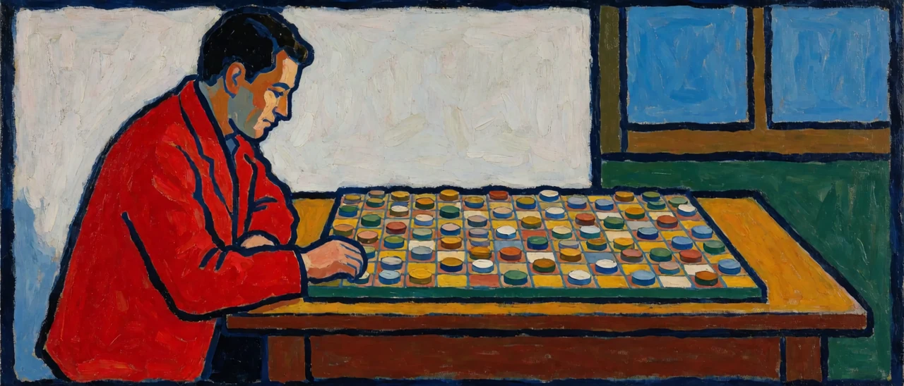

Look at a living cognizer as one lump and you can't see what controls what. This piece splits its workings into three layers: the avatar, which is the body; the handler, the subject of first-order representation; and the governor, which is second-order representation. None of the three layers holds an unchanging substance, and there is only one criterion for telling them apart: what controls what.
1. The avatar
The avatar is the body currently in operation. In reality it is a material lifeform whose outer membrane divides inside from outside, in other words an agent. It is the physical substrate, including the sense organs, the nervous system and the machinery of homeostasis, and it lasts only as long as it keeps the local order inside the membrane from dissipating. In League of Legends terms, it is the champion you are playing right now.
The avatar is both the physical footing the other two layers need in order to run and the condition that constrains how they run.
2. The handler (self-consciousness)
The handler is the subject of first-order representation, switched on on top of the avatar. It recognizes objects, gives that recognition a story and an identity, and relates to the world with "I" as the subject. The whole range of everyday self functions belongs here. It is where memeplexes pile up and do their work, and it depends entirely on the avatar being active.
The default setting the handler runs on is space-time coordinates. The avatar survives only by guarding its membrane, so it has to gauge where food and danger are and in what order things are coming; that purpose raises a space axis and a time axis. Space-time coordinates are not marks carved into the world. They are settings assumed for the sake of survival. Just as a champion is born, dies and respawns inside the map and the game clock of Summoner's Rift, the handler draws its lines between birth and death, past and future, me and not-me, inside these settings.
3. The governor (second-order representation)
The governor is the metacognitive function that steps back and observes the whole of the first-order representation the handler produces. Its way of working is second-order representation: the ability to recognize memeplexes as tools and use them as such.
In the governor's computing environment there is no time axis, and no boundary axis dividing me from not-me. The governor knows nothing but the here-now, and the here-now is also all there actually is. The past is a record left in the here-now, and the future is a prediction made in the here-now. Both are references computed in the here-now.
Describe this state in the handler's space-time coordinates and you get phrases like "a transcendent being that was never born and never dies, that only wakes and sleeps." Calling it transcendent is how things look from the side that presupposes space-time axes. Inside the governor's computing environment there is no axis of birth and death to begin with, so the same state is simply what gets observed. The governor's computation runs in the here-now and ends in the here-now.
Watch a League of Legends player who is truly absorbed and all three layers show up within a single game. An absorbed player has forgotten the mouse, the keyboard and the monitor. The champion is the avatar, and the computation that controls the precision of local fights and actions is the handler. The governor is a second-order computation running separately from that handler. It pulls together the state of both teams' spells and cooldowns, the minion waves and the objective timers, trades signals with teammates, and in order to win the game itself, it recognizes and controls the very precision control that is running at that moment. For the champion, what lies outside the monitor was never of interest. All three layers compute inside the Rift, and inside it the governor runs the handler's computation from one level up.

4. How the three layers relate
Outside the monitor is a region where the Rift's axes don't hold at all. Even so, the avatar-handler-governor system of multilayer control works the same way inside the Rift and in reality. The axes are set up differently in each domain, champion versus lifeform, Rift coordinates versus space-time coordinates, but the structure in which the handler controls precision on top of the avatar and the governor recognizes and controls that control itself doesn't care which domain it is in.
A League champion is separated from what isn't the champion by a boundary of pixels. It is a simulation of an agent, not a physical one, so while it comes with defined traits, a story, skills and passives, the setting for any internal membrane maintenance defending against the dissipation and collapse of the second law of thermodynamics is almost entirely left out. Even on an avatar with no membrane maintenance, the handler and the governor work just as they do in reality. The multilayer control structure does not depend on the physical substrate of membrane maintenance. The core of this piece is that invariance.
The three are not separable. They are not three hierarchically separated entities but one event observed at three layers at once. The avatar is an agent divided off by a membrane, the handler is the first-order representation that sets up space-time coordinates inside that membrane and runs on them, and the governor is the second-order representation that looks again at that first-order representation, coordinate settings and all. No layer needs an unchanging substance.
The game in the Rift rolls on without knowing what lies outside the monitor.